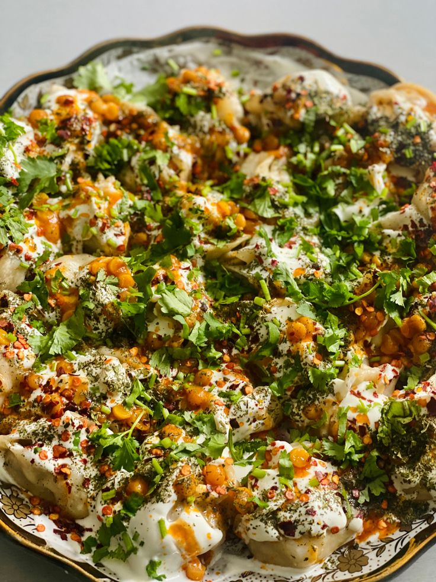
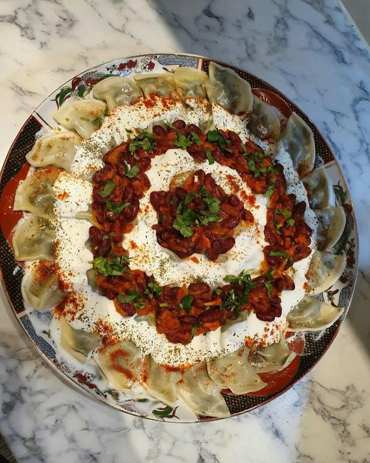

Recipe Collection
Recipe: Manto
Ingredients:
- 500g ground beef
- 1 onion, finely chopped
- 2 cloves garlic, minced
- 1 tablespoon cumin powder
- Salt and pepper to taste
- Wonton wrappers or dough
Instructions:
- Mix ground beef with onion, garlic, cumin, salt, and pepper.
- Fill wonton wrappers with the mixture and steam for 20 minutes.
- Serve with yogurt and garlic sauce.
Submitted by: Noorani
Recipe: Ashak
Ingredients:
- 1 package of dumpling wrappers
- 2 cups leek, finely chopped
- 500g ground beef
- 2 tablespoons tomato paste
- Yogurt and garlic sauce for serving
Instructions:
- Prepare the filling by sautéing leek and mixing with ground beef.
- Fill dumpling wrappers and steam for 15 minutes.
- Serve with tomato sauce and yogurt sauce.
Submitted by: Noorani
Recipe: Kebab

Ingredients:
- 500g lamb or beef, cut into chunks
- 1 onion, finely chopped
- 2 cloves of garlic, minced
- 1 tablespoon cumin powder
- 1 teaspoon paprika
- Salt and pepper to taste
- Wooden skewers (soaked in water for 30 minutes)
Instructions:
- Mix the meat with onion, garlic, cumin, paprika, salt, and pepper.
- Thread the meat onto the skewers.
- Grill for 8-10 minutes on medium-high heat.
- Serve with bread, rice, and salad.
Submitted by: Noorani
Recipe: Dogh

Ingredients:
- 1 cup yogurt
- 1 cup cold water
- 1 cucumber, diced
- 1 tablespoon dried mint
- Salt to taste
Instructions:
- Mix yogurt with cold water to thin it out.
- Add cucumber, mint, and salt.
- Chill and serve.
Submitted by: Noorani
Recipe: Sheer Chai

Ingredients:
- 2 cups water
- 2 cups milk
- 2 tablespoons black tea leaves
- Cardamom, cinnamon, and saffron to taste
- Boil the water and add the black tea leaves.
- Let it steep for about 5 minutes.
- Add milk, cardamom, cinnamon, and saffron.
- Simmer for another 10 minutes, then serve hot.
Instructions:
Submitted by: Noorani
Recipe: Sheer Khorma

Ingredients:
- 1 cup vermicelli
- 4 cups milk
- 1/4 cup sugar
- 1/4 cup dates, chopped
- 1/4 cup almonds and pistachios
- 1/4 teaspoon saffron
Instructions:
- Roast the vermicelli in a little ghee or butter until golden brown.
- In a pot, heat milk and add sugar and saffron. Stir until sugar dissolves.
- Add the roasted vermicelli and cook for about 10 minutes.
- Stir in chopped dates, almonds, and pistachios.
- Serve warm or chilled.
Submitted by: Noorani
Recipe: Ferini

Ingredients:
- 1 cup rice flour
- 4 cups milk
- 1/4 cup sugar
- 1 tablespoon rose water
- 1/2 teaspoon cardamom powder
Instructions:
- Mix rice flour with milk and cook over medium heat, stirring constantly.
- Add sugar, rose water, and cardamom powder once it thickens.
- Continue to cook until the mixture reaches a pudding-like consistency.
- Serve warm or chilled.
Submitted by: Noorani
Recipe: Baklava

Ingredients:
- 1 package phyllo dough
- 2 cups mixed nuts (walnuts, pistachios, almonds)
- 1 cup butter, melted
- 1 cup sugar
- 1 cup water
- 1 tablespoon lemon juice
- 1 teaspoon rose water (optional)
Instructions:
- Preheat the oven to 350°F (175°C).
- Layer phyllo dough in a baking dish, brushing each sheet with melted butter.
- Sprinkle a layer of mixed nuts between the phyllo layers.
- Repeat the layers until all ingredients are used, then cut into diamond shapes.
- Bake for 40-45 minutes or until golden brown.
- Meanwhile, make the syrup by combining sugar, water, and lemon juice in a pot and simmering for 10 minutes.
- Pour the hot syrup over the baked baklava and let it soak for a few hours before serving.
Submitted by: Noorani